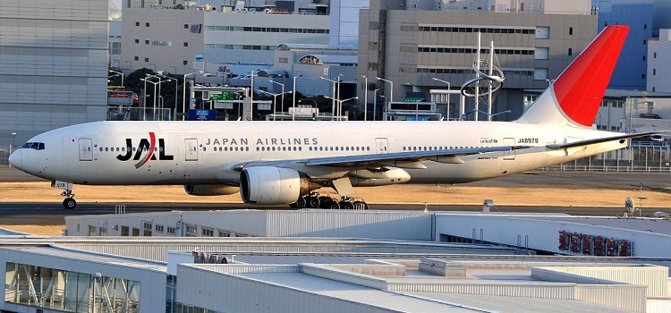

坐飞机去东京
从中国飞往日本东京十分的方便，我国有以下城市都能直飞东京：北京，上海，广州，成都，福州，大连，杭州，哈尔滨，厦门，武汉，青岛，沈阳。东京总共有两个机场，一个是羽田机场，另一个是成田机场。
羽田机场
东京国际机场（Tokyo International Airport),即东京羽田航空港，又称东京国际航空港。位于日本东京都大田区东南端多摩川河口的左岸，是日本最大的机场，俗称羽田机场（ Haneda Airport），总面积 408万平方米。
每天约有230个航班进出港，起落约460次。每年往来旅客人数约6600万人，占全国国内航空旅客人数（约9300万人）的半数以上。羽田机场是日本国内的航空运输中心，同时兼营国际航班业务。与全国主要城市：札幌、福冈、大阪、广岛、那霸、青森等37个空港有航班往返。每天约有230个航班进出港，起落约460次。
地址：日本東京都大田區羽田空港

图：羽田机场
第1候机楼
B1F有1处、1F有3处、2F有2处（共6处）（均在登机口外面）。
第1候机楼B1F Market Place商店街：销售JR车票、单轨电车票、京滨急行电铁车票及预约酒店，营业时间：6:00～22:00，预约酒店是10:00～20:00
第1候机楼1F 候机楼大厅南、北：从羽田机场发车的机场巴士、京急巴士车票（包括回数券），营业时间：8:00～23:00
第1候机楼1F Market Place商店街：从羽田机场发车的机场巴士、京急巴士车票（包括回数券），营业时间：7:30～24:00
第1候机楼2F 候机楼大厅南、北：办理国内、海外旅行保险，轮椅、婴儿车的出租，营业时间：5:30～20:00
第2候机楼
B1F有2处，1F有2处、2F有2处（共6处）（均在登机口外面）。
第2候机楼B1F 候机楼大厅北：办理JR车票、单轨电车票、京滨急行电铁及预约酒店，营业时间：6:00～22:00，预约酒店式10:00～20:00
第2候机楼B1F 候机楼大厅南：营业时间：6:00～19:00
第2候机楼1F 候机楼大厅南、北：办理从羽田机场发车的机场巴士、京急巴士车票（包括回数券），营业时间：7:30～24:00
第2候机楼2F 候机楼大厅南：办理国内、海外旅行保险，轮椅、婴儿车的出租，营业时间：7:00～18:00
第2候机楼2F 候机楼大厅北：办理国内、海外旅行保险，轮椅、婴儿车的出租，营业时间：5:30～20:00
羽田机场到市区的交通
从羽田机场到达市中心，可选择的交通工具很多，如、巴士、出租车、候机楼之间的免费循环巴士。
羽田机场官网（中文）：http://www.tokyo-airport-bldg.co.jp/cn/
成田机场
成田国际机场简称“成田机场”，位于东京东68公里的千叶县成田市境内，乘坐电车到市中心要近1个小时。成田国际机场虽然位于东京都以外的千叶县成田市境内，但是机场的所有权属于东京。这和我国的西安国际机场位于咸阳市境内同出一辙。
成田国际机场主要运作国际航线，在旅客吞吐量和航班数上仅次于羽田机场。
成田国际机场内有280个登记手续办理柜台、112个登机口、49个登机栈桥、2900个临时停车位、1个机场酒店、邮局、银行、外币兑换、饮食、餐厅、酒吧、贵宾休息室、免税店、书报/烟酒店、化妆品店、礼品店、旅行社、旅游服务台、在机场可提供租车服务公司、出在机场可提供租车服务公司、急救中心、婴儿室、残疾人设施、商务中心。
地址：日本千葉県成田市古込1-1
综合问讯处
如果你到达成田机场有什么困难的地方，请到有“？”的问讯处询问。都有问号的标记的。如图所示第一候机楼只有1、3、4楼和地下1楼有问讯处。第二候机楼只有主楼1、3楼和主楼地下楼以及卫星岛3楼。
轮椅/婴儿车服务
在候机楼内的各问讯处有免费出借轮椅、婴儿车的服务。出发的旅客能使用到离境手续前，到达的旅客能在入境手续后的区域开始使用，要用轮椅或婴儿车的旅客请向附近的问讯处提出。
明信片代寄服务
第一候机楼只有3楼有此服务
第二候机楼有主楼3楼和卫星岛3楼
咨询问讯台柜台的职员，要求代寄的明信片投寄到出发大厅的邮箱里喔！最重要的是成田机场提供3种原创纪念图章供旅客在明信片空白处盖章。很漂亮的！
更多设施介绍见官网：http://www.narita-airport.jp/
成田机场到市区的交通
从成田机场到达市区的交通工具有乘坐电车（成田SKY ACCESS线、京成本线、JR线）的旅客在地下1层“机场第2大楼站”上车，当然了，还可乘坐巴士、出租车，或自驾车等。
#电车#
坐电车的话，可乘坐成田Sky Access线、京成本线、JR线。
要到第1候机楼的旅客请在“成田机场站”下车。
要到第2候机楼或第3候机楼的旅客请在“机场第2大楼站”下车。
机场第2大楼站至第3候机楼的所需时间为步行约15分钟，乘坐候机楼连接巴士（免费）约10～15分钟（乘车时间）。另，巴士可能会因交通拥堵等情况而误点或停开，请安排充裕的时间出门。

图：从成田机场到东京市区地铁交通图
#机场巴士#
由于道路情况和天气情况，有时可能会发生巴士误点，尽量提早安排时间。
1号航站楼是最大，3号航站楼最小；航站楼之间有免费穿梭巴士；2、3航站楼之间也可以步行到达，需要15分钟左右。
运营时间：5:00-22:30，每7-10分钟一趟，航站楼之间需要5-10分钟车程。
机场巴士相关提示：
东京往来成田机场的交通选择很多，因为整个东京的交通就是一个大复杂。成田机场到东京市区车程大约要50分钟到1个半小时，搭最快的车票价格也最贵。
1）一下车就要到酒店门口，可以参考利用机场Airport Limousine是否有到酒店门口的路线；
2)住宿地点距离东京车站、银座不远的话，可以达成京成巴士或者平和交通巴士；
3)住宿地点在东京车站、品川、涩谷、新宿、池袋、大宫、横滨、大船JR车站附近的，建议搭乘成田特快N’EX；
4)住宿地点在日暮里、上野站附近，建议达成Skyline；
5)住宿地点不在上述范围内，想要快一点到达的话，住宿地在东京站以南就搭乘特快N’EX，在东京车站以北就搭乘Skyline。
#出租车#
出租车从各候机楼的到达层（1楼）发车。而且都是定额车费支付的。
坐船去东京
中国到达日本可乘坐轮船的城市有上海、天津、青岛三个城市。主要轮船名字有新鉴真号、苏州号、理想之国。票价约为机票价格的一半，不过运行的时间肯定是飞机的几倍。
新鉴真号
简介
“新鉴真”是中日国际轮渡有限公司旗下的。总吨14543吨，全长156.69米，设计航速23海里，服务航速21海里，每周六从上海出发，每周一抵达日本大阪，海上航行43小时，是中日海上快速客货定班轮。
图：新鉴真号
购票
旅客凭本人护照和有效旅行证件购买船票，船票只限旅客本人使用。
购票处：
上海市东大名路908号新外滩花苑金岸大厦18楼C座
上海市北苏州路20号上海大厦商务中心
北京建国门内大街9号2层国际饭店
北京建国门外大街28号旅游大厦1楼
大阪市西区新町1－8－6三愛ビル2F
网上预约:：http://booking.xinjianzhen.com/
行李托运
每一全票旅客可免费托运行李30公斤（或0.2立方米）2件，可免费随身携带行李15公斤。超过上述数量后，应付费托运，标准每件30公斤（或0.2立方米）3000日元或240元，并依此类推。
乘船地点
上海港国际客运中心：上海市东大名路500号
大阪南港国际客运站：大阪市住之江区南港北1丁目
神户国际客运站：神户市中央新港町4-5
乘船手续办理顺序
上海：交纳港口使用费→进入联检大厅→海关检查→行李托运→边防出境手续→登船
阪神：CHECK IN →办理行李托运→办理出境检查→登船
办理乘船手续时间
上海办理乘船手续时间为10:00-11:30，11:30后停止办理出境手续。
阪神办理乘船手续时间为9:00-10：30，10:30后停止办理出境手续。
苏州号
简介
“苏州号”往返于中国上海与日本大阪之间，途经黄浦江、长江、东海、太平洋和日本内海，航程约800海里，航时约46小时。
图：苏州号
购票
旅客凭有效证件，来我司或代理店购票，团体旅客可电话预约。旅客可购买上海或大阪始发的船票，也可购买一年内有效的OPEN返程票。每一张船票，可享受免费供应早餐。
购票处
上海国际轮渡有限公司：上海市东大名路908号金岸大厦15楼D、E、F、G座
国旅总社票务中心：北京市建国门内大街9号；北京中关村南大街11号光大国信大厦一层
北京国旅票务公司：北京市建国门外大街28号
TEL：010-65150232
网上预约：http://www.suzhouhao.com/cpsq.asp
行李托运
每一全票旅客可免费托运行李30公斤（或0.2立方米）2件，可免费随身携带行李30公斤。超过上述数量后，应付费托运，标准每件30公斤（或0.2立方米）3000日元，并依此类推。
乘船地点
上海港国际客运中心：上海东大名路500号
大阪南港国际客运站：大阪市住之江区南港北1丁目
乘船手续办理顺序
上海：交纳港口使用费→进入联检大厅→海关检查→行李托运→边防出境手续→登船
大阪：CHECK IN →办理行李托运→办理出境检查→登船
办理乘船手续时间
上海办理乘船手续时间为09:00—10:30，10:30后停止办理出境手续。
大阪办理乘船手续时间为09:30—11：30，11:30后停止办理出境手续。
苏州号运行时刻表
上海到大阪：上海出发 周二 11：00 入港大阪，周四 9：00
大阪到上海：大阪出发 周五 12：00 入港上海，周日 11：00